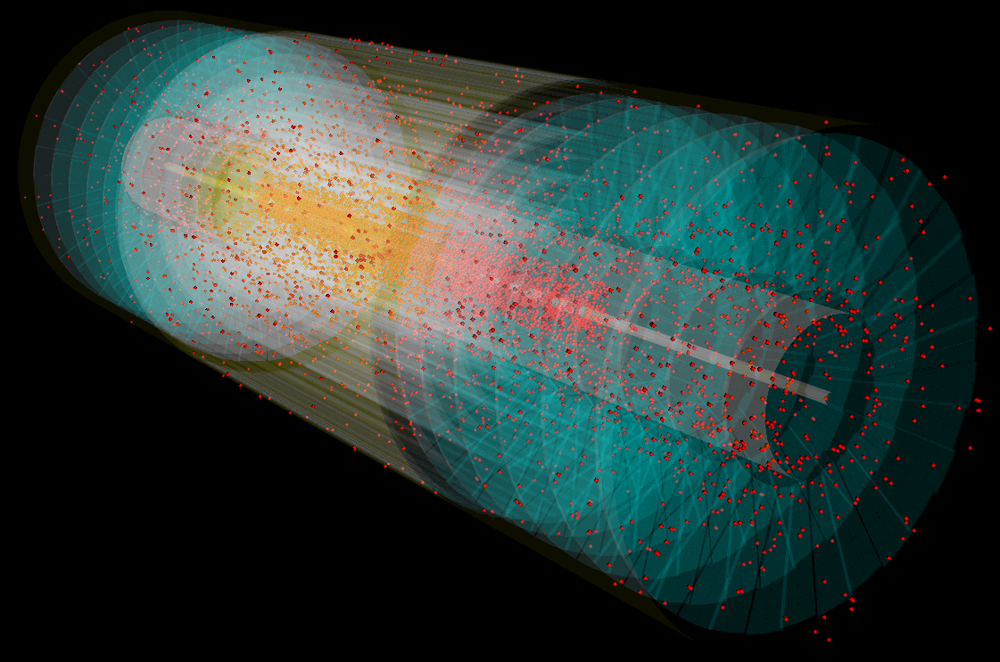

Center For Sustainable Computing at the University Of Huddersfield
TRACCC and ACTS (ACTS Common Tracking Software)
I helped find block size issues in CUDA code of the project using Nvidia Nsight profiling tools with various block sizes to test performance.
| Function | Compute Throughput (%) | Memory Throughput (%) |
|
Connect_Components
|
-boxplot.png "Connect_Components Compute Throughput")
|
-boxplot.png "Connect_Components Memory Throughput")
|
|
Count_Cluster_Cells
|
-boxplot.png "Count_Cluster_Cells Compute Throughput")
|
-boxplot.png "Count_Cluster_Cells Memory Throughput")
|
These graphs showed a problem where the memory block sizes for each kernel in the CUDA code was not optimised properly, this led to extremely low thoughput values when running the code on a GPU resulting in large potential performance losses.
A presentation using this data and the findings that they show was presented at an ACTS Parellization Meeting was done by Minsi Chen as shown
here.
Fixes for this problem were them implemented by people working on the project creating a large performance uplift when using GPU parellization when processing data.

TRACCC Event Visualisation
I created a Command Line Python Application using the Visualisation ToolKit to render the data from the ATLAS particle collider.The data had to be trimmed slightly to remove sections of events that occured in parts of the collider that were not on the model being used.
This data and trimming program can be found here. This visulisation used the data files from the collision event and a model file of the collider to create a visual representation of where the particles were detected, this was used to help understand the movements and velocities of each particle from the event.